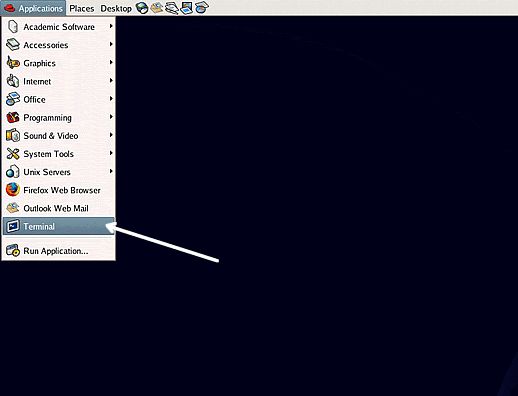

UNIX简介
什么是UNIX？
 UNIX是一种在20世纪60年代首次开发的操作系统，自此以后一直在不断的发展。操作系统是指使计算机工作的程序套件。Unix是用于服务器，台式机和笔记本电脑的稳定，多用户，多任务系统。
UNIX是一种在20世纪60年代首次开发的操作系统，自此以后一直在不断的发展。操作系统是指使计算机工作的程序套件。Unix是用于服务器，台式机和笔记本电脑的稳定，多用户，多任务系统。
UNIX系统还具有类似于Microsoft Windows的图形用户界面（GUI），提供易于使用的环境。但是，对于未由图形程序覆盖的操作，或者没有可用的Windows界面（例如，在telnet会话中）的操作，则需要UNIX的知识。
UNIX类型
UNIX有许多不同版本，尽管它们具有共同的相似之处。最受欢迎的UNIX系列是Sun Solaris，GNU / Linux和MacOS X。
在学校，我们在服务器和工作站上使用Solaris，在服务器和台式机上使用Fedora Linux。
UNIX操作系统
UNIX操作系统由三部分组成：内核，shell和程序。
内核
UNIX的内核是操作系统的集线器：它为程序分配时间和内存，并响应处理文件存储和通信的系统调用。
作为shell和内核协同工作的一个例子，假设一个用户键入rm myfile（有删除文件myfile的效果）。shell在文件库中搜索包含程序rm的文件，然后通过系统调用来请求内核在myfile上执行程序rm。当进程 rm myfile执行完后，shell将UNIX提示符％返回给用户，表示它在等待进一步的命令。
shell
shell扮演着用户和内核之间的接口。当用户登录时，登录程序将检查用户名和密码，然后启动一个名为shell的程序。shell是命令行解释器（CLI）。它解释用户输入的命令，然后安排命令执行。这些命令本身也是程序：当它们终止时，shell重新向用户显示一个提示符（在我们的系统上为％）。
熟练的用户可以自定义使用的shell程序，用户可以在同一台机器上使用不同的shell。 默认情况下，学校的员工和学生使用的是tcsh shell。
tcsh shell具有某些功能来帮助用户输入命令：
文件名自动补全 - 通过键入命令、文件名或目录名称的一部分，然后按[ Tab ]键，tcsh shell将自动完成名称的剩余部分。如果shell找到多个以您输入的字母开头的名称，那么它会发出蜂鸣声，提示您再输入一些字母以使用Tab键自动完成文件名的输入。
历史 - shell保存您输入的命令的列表。如果需要重复命令，请使用光标键上下滚动命令列表（按键的历史记录）以查看以前的命令。
文件和进程
UNIX中的一切都是文件或进程。
进程是由唯一的PID（进程标识符）识别的执行程序。
文件是数据的集合。它们由用户使用文本编辑器、运行编译器等创建。
文件示例：
- 一份文件（报告，散文等）
- 用一些高级编程语言编写的程序的文本
- 指令直接对机器可理解，对于临时用户而言是不可理解的，例如二进制数字（可执行文件或二进制文件）的集合;
- 一个目录，其中包含有关其内容的信息，可能是其他目录（子目录）和普通文件的混合。
目录结构
所有文件在目录结构中分组在一起。文件系统以分层结构排列，如同一棵反向的树。层次结构的顶端传统上称为root（以斜杠/形式写成）。

在上图中，我们看到本科生“ee51vn”的主目录包含两个子目录（docs和pics）和一个名为report.doc的文件。
文件report.doc的完整路径为“/home/its/ug1/ee51vn/report.doc”
启动UNIX终端
要打开UNIX终端窗口，请单击应用程序/附件菜单中的“终端”图标。

然后，UNIX终端窗口将显示一个％提示符，等待您开始输入命令。